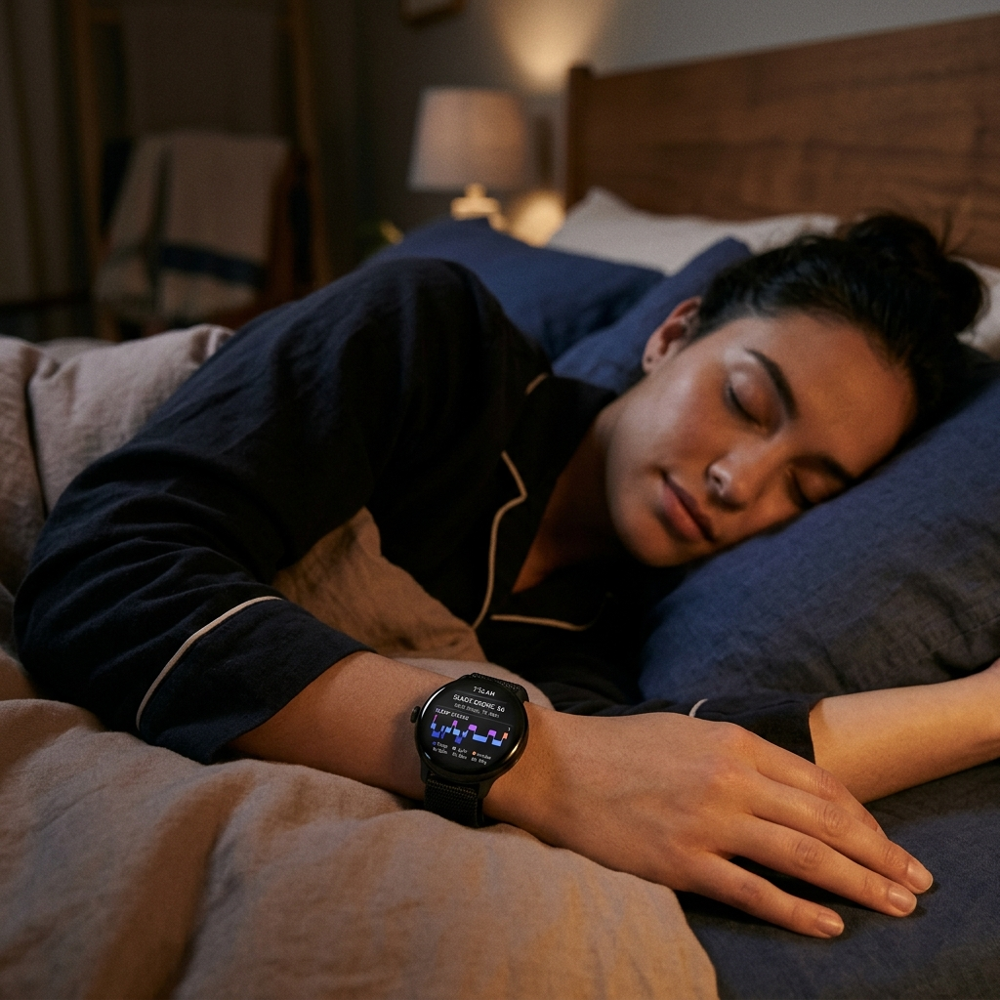

Sleep is the foundation of our physical and mental health. While we sleep, our bodies repair tissues, consolidate memories, and regulate essential hormones. Yet millions of people suffer from poor sleep quality or undiagnosed sleep disorders, most notably obstructive sleep apnea. In the past, diagnosing sleep issues required spending a night covered in electrodes in a clinical sleep lab. Today, advanced Wear OS sensors allow you to monitor your sleep architecture and scan for potential respiratory issues right from your wrist.
By leveraging the sophisticated biometric arrays found in modern smartwatches, such as the Google Pixel Watch and Samsung Galaxy Watch series, users can access laboratory-grade insights into their resting habits. In this guide, we will explore how Wear OS tracks your sleep, the science behind sleep apnea detection, and how you can set up these features to improve your overall wellness.

The Science: How Wear OS Decodes Sleep Stages

Your smartwatch doesn't just know when you fall asleep and wake up; it breaks your night down into specific sleep stages. This is achieved by combining data from two primary sensors: the 3-axis accelerometer and the photoplethysmography (PPG) optical heart rate sensor. The accelerometer tracks physical movement (or the lack thereof), while the PPG sensor continuously monitors changes in your pulse rate and heart rate variability (HRV).
Using machine learning algorithms, Wear OS processes these signals to categorize your sleep into four distinct phases:
- Awake: Brief periods of wakefulness during the night, which are completely normal and often forgotten by morning.
- Light Sleep: The transition phase where your heart rate and breathing slow down. Light sleep facilitates physical recovery and makes up the majority of your night.
- Deep Sleep: The most restorative phase, critical for muscle tissue repair, immune system strengthening, and physical energy replenishment.
- REM (Rapid Eye Movement) Sleep: The phase associated with dreaming. REM sleep is essential for cognitive processing, emotional regulation, and memory consolidation.
Detecting Sleep Apnea Symptoms from Your Wrist
Obstructive Sleep Apnea (OSA) is a serious medical condition where the airway becomes temporarily blocked during sleep, causing breathing to stop and start repeatedly. This leads to drops in blood oxygen saturation levels (SpO2) and micro-arousals that disrupt deep sleep. Because these episodes occur while the person is asleep, up to 80% of sleep apnea cases remain undiagnosed.
Modern Wear OS watches combat this by monitoring oxygen saturation (SpO2) fluctuations and respiratory rate throughout the night. If the sensor detects frequent, sharp drops in blood oxygen alongside sudden heart rate spikes, it can flag these breathing disturbances. On recent Samsung Galaxy Watches, the FDA-approved Sleep Apnea feature specifically monitors for signs of moderate-to-severe OSA by tracking relative oxygen declines over a multi-night period.
Medical Disclaimer
While smartwatch sensors provide valuable indicators of sleep quality and breathing disturbances, they are wellness devices and not replacements for clinical diagnosis. If your watch repeatedly flags high breathing disturbances or low oxygen levels, consult a medical professional for a formal sleep study.
Comparing Wear OS Sleep Trackers
Both Samsung Health and Fitbit (on the Pixel Watch) offer excellent sleep metrics, but they package their data and features differently. Let's compare their capabilities:
| Feature | Samsung Health (Galaxy Watch) | Fitbit / Google (Pixel Watch) |
|---|---|---|
| Sleep Stages | Detailed graph with percentage breakdown. | Accurate graphs with sleep stage comparisons. |
| Oxygen Tracking | Continuous overnight SpO2 percentage display. | Estimated Oxygen Variation (EOV) chart. |
| Sleep Apnea Scanning | FDA-approved Sleep Apnea detection feature. | Identifies variations and breathing disturbances. |
| Sleep Coaching | Assigns a "Sleep Animal" and 4-week training program. | Sleep Profile (requires Fitbit Premium). |
| Snore Detection | Uses phone microphone to record snoring events. | Available on selected premium profiles. |
Setting Up Sleep and Oxygen Tracking
To ensure your Wear OS smartwatch is actively monitoring your sleep quality and oxygen levels, follow these configuration steps:
On Samsung Galaxy Watch (Samsung Health):
- Open the Samsung Health app on your watch, scroll to the bottom, and tap Settings.
- Tap Measurement and ensure both Blood oxygen during sleep and Snore detection are toggled ON.
- For the Sleep Apnea scan, open the Samsung Health Monitor app on your phone, select the Sleep Apnea option, and follow the calibration prompts. It requires tracking your sleep for at least two nights within a 10-day window.
On Google Pixel Watch (Fitbit):
- Open the Fitbit app on your connected smartphone.
- Tap your profile icon and select your Pixel Watch settings.
- Ensure that health tracking permissions are granted and that the sleep tracking feature is active. Your watch will automatically record SpO2 variations and heart rate trends during sleep.
Optimizing Your Watch for Overnight Tracking
Wearing a smartwatch to bed can sometimes feel bulky, and battery management is a common concern. Here are some practical tips to maximize your overnight tracking experience:
- Activate Bedtime/Sleep Mode: Swipe down to your Quick Settings panel and enable Bedtime/Sleep Mode. This disables the Always-On Display, turns off tilt-to-wake, silences notifications, and keeps the screen completely dark unless physically pressed.
- Check Your Fit: For accurate SpO2 and heart rate readings, the watch needs a snug fit. Ensure the band is tight enough that the sensor remains in constant contact with your skin, about one finger's width above your wrist bone.
- Charge Smartly: To avoid your watch dying in the middle of the night, establish a charging routine. Charging your device while you shower or while working at your desk for an hour before bed is usually enough to keep it topped up.
By transforming your Wear OS smartwatch into a dedicated nightly health monitor, you gain critical visibility into the third of your life spent asleep. Use these tools to identify trends, improve sleep hygiene, and take proactive control of your respiratory health.